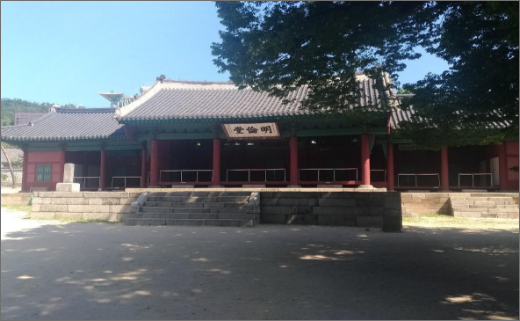

教員・学生研究紹介

Yamato Tsuji
辻 大和
東アジア史、朝鮮王朝史、
韓国朝鮮研究
Q1.現在の研究テーマ（または専門分野）について教えてください。
韓国朝鮮を中心とする東アジアの生物資源、文化資源の流通に関する歴史学的研究です。時期は大別して二つあり、一つ目の時期は18～19世紀に朝鮮王朝と明清中国との間で行われた国際貿易を研究しています。特に朝鮮王朝が中国に輸出した高価な薬用人蔘や、朝鮮王朝が中国から輸入した地理書、歴史書のような機密性の高い商品を扱っています。
二つ目は、近現代における、東アジア関係歴史資源の研究です。具体的には東アジアを対象とした学術調査に関係する史料整理・研究のほか、歴史史料をコンテンツ創作につなげるための基盤に関する研究です。
人蔘の一場

ソウルの文廟（成均館大学）
Q2.教員になるまで、どんな学術・実務上の経験がありますか？
大学院博士課程では17世紀に朝鮮王朝が明清中国との間で行った貿易について研究しました。博士課程在学中は二年間韓国に留学して大学院の授業に出席したり、資料収集をしたりしました。
博士課程終了後に入った研究所では助教として植民地朝鮮に関する史料整理やプロジェクト研究支援の業務に従事しました。そこで仕事の幅が広がり実務上のノウハウを蓄積することができました。
助教任期満了後には短期間でしたが、大学図書館で特任研究員として、アジア研究図書館立ち上げのための研究および支援業務に従事しました。 そのほか博士課程後半からは大学での韓国朝鮮語の非常勤講師を長く務めました。
Q3.研究指導で大切にしていることについて教えてください。
過去を対象にする学問のなかで歴史学は文献の扱いが必須になります。そのため文献のサーベイや理解には大きなエネルギーを注がねばなりません。 大学院生には文献を広く調査すること、深く読みこむことを推奨しています。未公刊資料はもちろん探査せねばなりませんが、公刊資料を読み込むことでも思いがけない情報が得られることがあります。フットワークを軽くして多くの地域の図書館、文書館をはじめとする史料所蔵機関を訪ね歩くことが重要だと考えています。
Q4受験生へメッセージ（大学院生へ）
本領域は人文社会系のなかでも空間を対象とする研究者が集まっていることが大きな特徴だと思います。大学院での学びで多くの刺激を受けられることでしょう。 また本学は東アジア都市を対象とする歴史研究には便利な環境にあります。史料へのアクセスという意味では、横浜からは国立国会図書館や、東洋文庫、ジェトロアジア経済研究所図書館のような世界的な東アジア関係史料所蔵機関に短時間でアクセスできますし、横浜市内にも横浜開港資料館や神奈川近代文学館のように独自史料の豊富な機関が複数あります。それに関係して、首都圏で無数に開かれている学会・研究会、展覧会に気軽に足を延ばせるのも大学院生には良いことです。